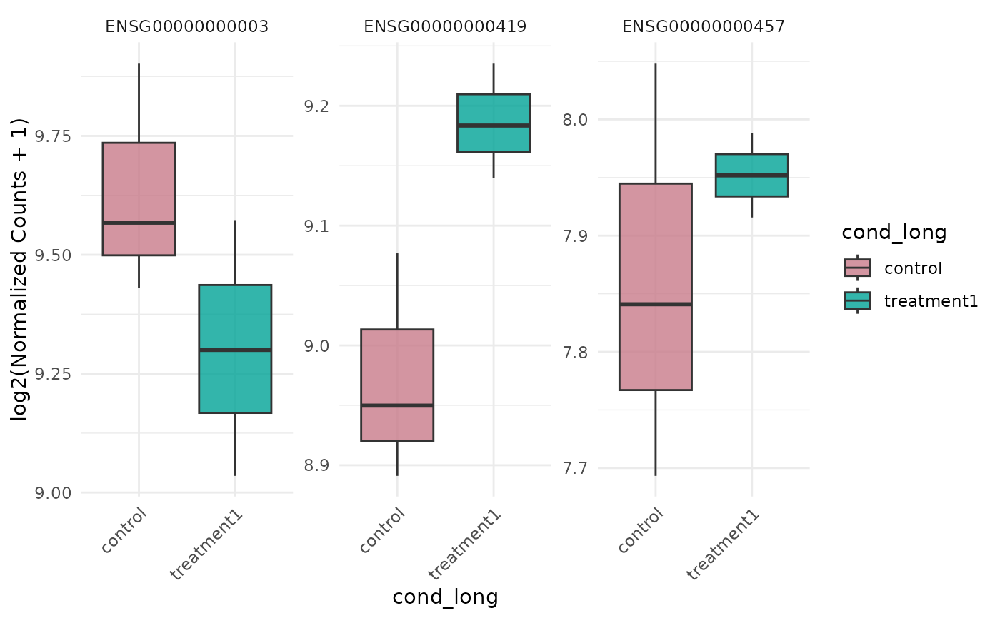

Plot gene expression distributions as boxplots
Source:R/bioccheck_roxygen_fixes.R, R/viz_related.R
get_expression_boxplot.RdDisplays per-sample or per-group distributions for selected genes using
normalized counts. The x-axis unit is controlled by by, and faceting is
controlled explicitly by facet_by.
Usage
get_expression_boxplot(
x,
genes = NULL,
sample_group = NULL,
group_column = NULL,
log_transform = TRUE,
display_id = NULL,
display_from = NULL,
display_orgdb = NULL,
facet_scales = "free_y",
facet_nrow = NULL,
facet_ncol = NULL,
stats_group = FALSE,
p.label = "p.signif",
stat_comparisons = NULL,
pool_genes = FALSE,
by = "group",
facet_by = "auto",
fill_by = NULL,
sample_order = c("input", "group", "expression"),
comparisons = NULL
)Arguments
- x
A
VISTAobject.- genes
Optional character vector of genes to display (<=20). Defaults to all genes.
- sample_group
Optional character vector specifying which groups (as defined by
group_column) to include.- group_column
Optional column name in
sample_infoused as the grouping variable.- log_transform
Logical; apply log2(x + 1) transform before plotting.
- display_id
Optional column in
rowData(x)to use for gene labels (facets).- display_from
Optional source ID type for mapping (used when
display_idis not found inrowData).- display_orgdb
Optional
OrgDbobject used for ID mapping whendisplay_idis set but not found inrowData.- facet_scales
Facet scales argument passed to
facet_wrap()(default"free_y").- facet_nrow, facet_ncol
Optional layout passed to
facet_wrap()when faceting.- stats_group
Logical; add statistical comparisons between groups when
TRUE. Only supported whenby = "group".- p.label
Label format for
ggpubr::stat_compare_means().- stat_comparisons
Optional list of length-2 group pairs passed to
ggpubr::stat_compare_means()for significance brackets.- pool_genes
Logical; when
TRUE, pool selected genes into one distribution per x-axis category (scenario 1).- by
When
pool_genes = TRUE, either"group"or"sample"(x-axis and optional fill). Whenpool_genes = FALSE, either"group"or"gene"(x-axis for per-gene distributions).- facet_by
Faceting control: for pooled genes,
"group"or"none"; for per-gene,"none"(default) or"gene"."auto"selects the most readable layout.- fill_by
Fill mapping. Special values are
"group","gene", and"x"(the plotted x-axis variable, when available). You may also supply a discrete column from the joined plotting data, such as a sample metadata column or"sample".- sample_order
Ordering used when sample names are shown on the x-axis:
"input","group", or"expression".- comparisons
Deprecated; use
stat_comparisons.
Examples
v <- example_vista()
genes <- head(rownames(v), 3)
p <- get_expression_boxplot(v, genes = genes)
print(p)
